TechRetail, una empresa peruana de comercio electronico, sufria caidas frecuentes y tiempos de respuesta lentos durante picos de trafico (campañas como "Buen Fin" o "Cyber Days"), con perdidas estimadas en S/ 15,000 por hora de inactividad. Este informe documenta el diseño e implementacion de un cluster Docker Swarm de tres nodos que orquesta cinco microservicios (frontend, backend, base de datos, cache y visualizador), soporta escalado horizontal en caliente, distribuye replicas automaticamente entre nodos y gestiona credenciales de forma segura mediante Docker Secrets y Configs.
El proyecto se desarrollo sobre Docker Desktop local con contenedores Docker-in-Docker (DinD) simulando los tres nodos fisicos, despues de constatar que la plataforma originalmente sugerida (Play with Docker) fue deprecada en marzo de 2026.
Resultados verificados:
Ready y Active.3 -> 5 replicas, backend 2 -> 4 replicas.| Sintoma | Impacto |
|---|---|
| Caidas en horas pico | Servicio inaccesible para clientes |
| Latencia >8 segundos por peticion | Abandono de carrito alto |
| Perdidas economicas | ~S/ 15,000 por hora caida |
| Imposibilidad de escalar rapido | No respuesta ante demanda inesperada |
Migrar de la arquitectura monolitica hacia una arquitectura de microservicios contenerizada, orquestada con Docker Swarm. Las ventajas tecnicas que motivan esta eleccion:
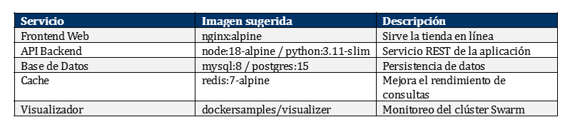
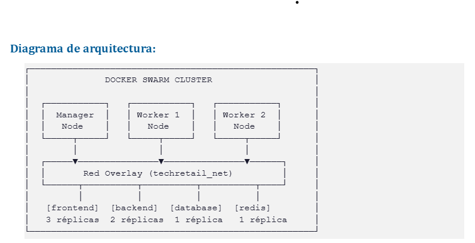
| Servicio | Imagen | Replicas | Funcion |
|---|---|---|---|
frontend | nginx:alpine | 3 → 5 | SPA + reverse proxy /api al backend |
backend | node:18-alpine | 2 → 4 | API REST minima, devuelve hostname del contenedor |
database | mysql:8 | 1 (manager) | Persistencia, secret en /run/secrets/db_password |
cache | redis:7-alpine | 1 | Cache de consultas |
visualizer | dockersamples/visualizer | 1 (manager) | Dashboard del cluster en :8080 |
docker:dind actuando como nodos. Cada DinD corre su propio Docker daemon, simulando un nodo fisico independiente.placement: constraints: [node.role == manager]. Garantiza que el volumen db_data viva siempre en el mismo nodo.server.js se monta como Config en /app/server.js.dnsrr en el backend (round-robin a nivel DNS) para garantizar balanceo real entre las replicas. Detalle en seccion 6.4.start-first: la nueva replica arranca antes de bajar la antigua, permitiendo zero-downtime en futuras actualizaciones.Originalmente se planifico usar Play with Docker (PWD), recomendado por el docente. Al intentar acceder se constato que PWD fue deprecado a partir del 1 de marzo de 2026:
"Deprecation notice: Play with Docker will be unavailable starting March 1, 2026."
Como solucion se migro a Docker Desktop local levantando los 3 nodos del cluster como contenedores Docker-in-Docker (DinD) en una red bridge dedicada (swarm-net). Cada DinD ejecuta su propio daemon Docker, lo que permite simular el comportamiento multi-nodo de un cluster real.
Este patron se automatizo en scripts/local-setup.ps1 y se documenta en el repositorio.
El script local-setup.ps1 ejecuta automaticamente:
# 1) Red bridge para los 3 nodos
docker network create swarm-net
# 2) Levantar los 3 contenedores DinD (privilegiados)
docker run -d --privileged --name node1 -h node1 --network swarm-net `
-e DOCKER_TLS_CERTDIR="" -p 80:80 -p 8080:8080 docker:dind
docker run -d --privileged --name node2 -h node2 --network swarm-net `
-e DOCKER_TLS_CERTDIR="" docker:dind
docker run -d --privileged --name node3 -h node3 --network swarm-net `
-e DOCKER_TLS_CERTDIR="" docker:dind
# 3) Polling activo hasta que los daemons internos respondan
# 4) Inicializar Swarm en node1
docker exec node1 docker swarm init --advertise-addr <IP_NODE1>
# 5) Unir los workers
docker exec node2 docker swarm join --token <TOKEN> <IP_NODE1>:2377
docker exec node3 docker swarm join --token <TOKEN> <IP_NODE1>:2377Verificacion del cluster:
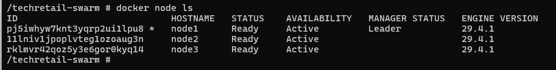
docker node ls: 3 nodos en estado Ready, node1 como LeaderLa siguiente captura combina las 4 piezas de evidencia exigidas por la rubrica del docente: nodos del cluster, servicios desplegados con sus replicas, secrets gestionados y configs montados.
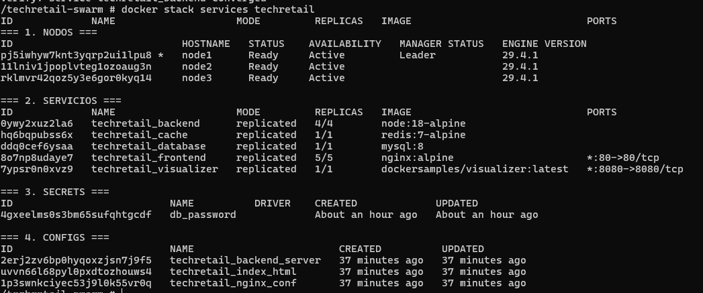
El secret db_password se crea con:
echo "MiPasswordSegura123" | docker secret create db_password -Se monta en /run/secrets/db_password dentro de los contenedores de backend y database. Esta cifrado en transito (TLS entre nodos del swarm) y en reposo en los managers.
| Config | Archivo origen | Punto de montaje |
|---|---|---|
nginx_conf | frontend/nginx.conf | /etc/nginx/nginx.conf |
index_html | frontend/index.html | /usr/share/nginx/html/index.html |
backend_server | backend/server.js | /app/server.js |
Esta decision evita la necesidad de construir y publicar una imagen propia del backend en Docker Hub. El codigo JavaScript se distribuye automaticamente por Swarm a cualquier nodo donde levante una replica.
Tras el escalado, los 12 contenedores del stack se distribuyen automaticamente entre los 3 nodos del cluster:
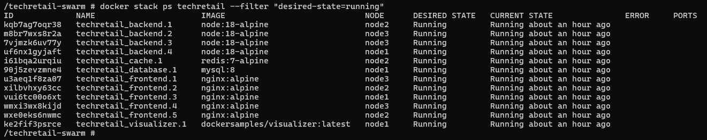
docker stack ps techretail: 12 tareas distribuidas entre node1, node2 y node3, todas en estado Runningdocker stack deploy -c docker-compose.yml techretailSalida del despliegue:
Creating network techretail_techretail_net
Creating network techretail_default
Creating config techretail_backend_server
Creating config techretail_nginx_conf
Creating config techretail_index_html
Creating service techretail_backend
Creating service techretail_database
Creating service techretail_cache
Creating service techretail_visualizer
Creating service techretail_frontendEstado final de los servicios:
ID NAME MODE REPLICAS IMAGE PORTS
0ywy2xuz2la6 techretail_backend replicated 4/4 node:18-alpine
hq6bqpubss6x techretail_cache replicated 1/1 redis:7-alpine
ddq0cef6ysaa techretail_database replicated 1/1 mysql:8
8o7np8udaye7 techretail_frontend replicated 3/3 nginx:alpine *:80->80/tcp
7ypsr0n0xvz9 techretail_visualizer replicated 1/1 dockersamples/visualizer:latest *:8080->8080/tcpEl visualizador en http://localhost:8080 muestra los contenedores distribuidos automaticamente entre los 3 nodos:
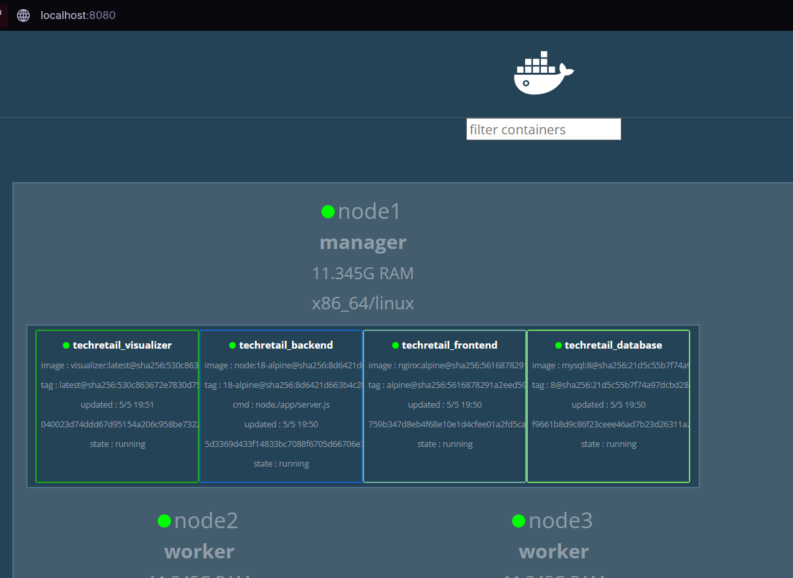
La SPA accesible en http://localhost consume la API del backend y muestra el hostname del contenedor que respondio cada peticion. Diseñada para evidenciar visualmente el balanceo de carga entre replicas:
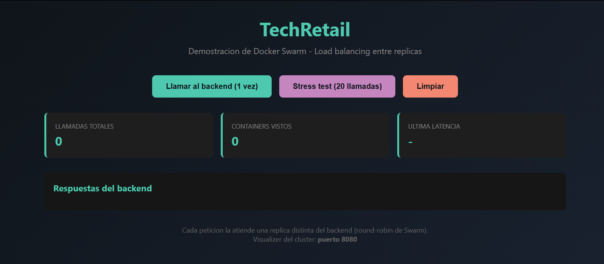
docker service scale techretail_frontend=5
docker service scale techretail_backend=4Resultado tras el escalado: 5 replicas de frontend y 4 de backend, todas en estado Running, distribuidas entre los 3 nodos:
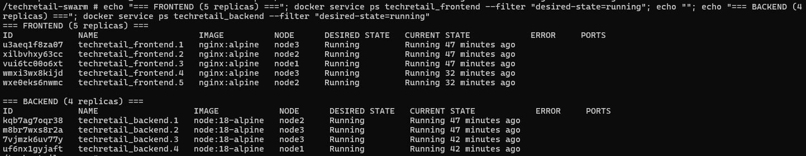
Distribucion del cluster despues del escalado (12 contenedores totales):
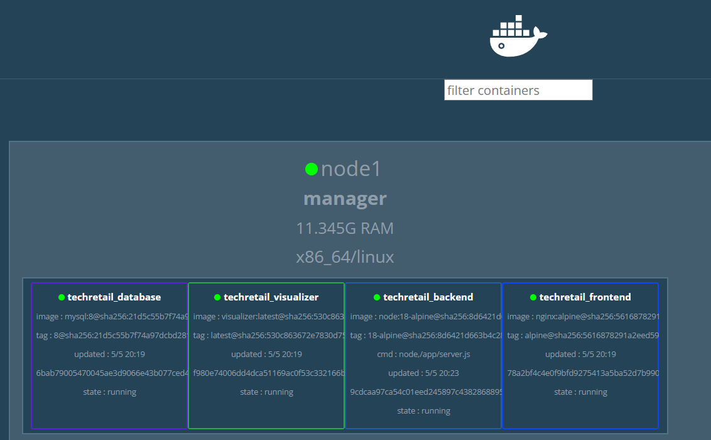
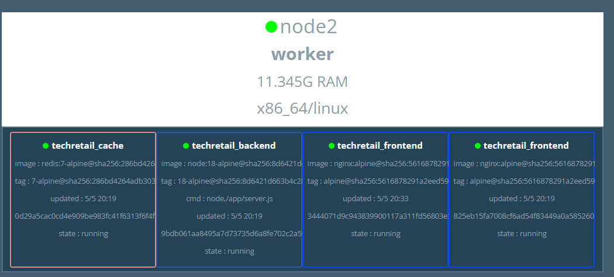
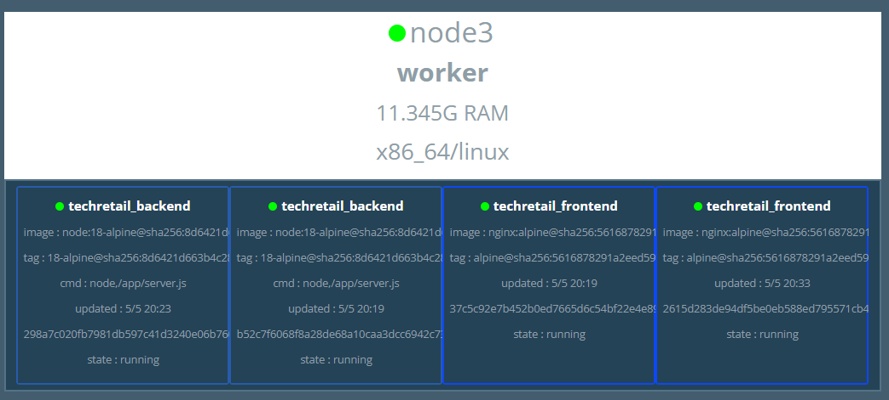
| Nodo | Contenedores |
|---|---|
| node1 (manager) | database, visualizer, backend, frontend |
| node2 (worker) | cache, backend, 2× frontend |
| node3 (worker) | 2× backend, 2× frontend |
Swarm distribuyo las replicas automaticamente respetando los placement constraints (database y visualizer en el manager) y balanceando el resto entre los 3 nodos.
Stress test desde la SPA: 20 llamadas consecutivas al endpoint /api. Cada peticion es atendida por una de las 4 replicas del backend (DNS round-robin):
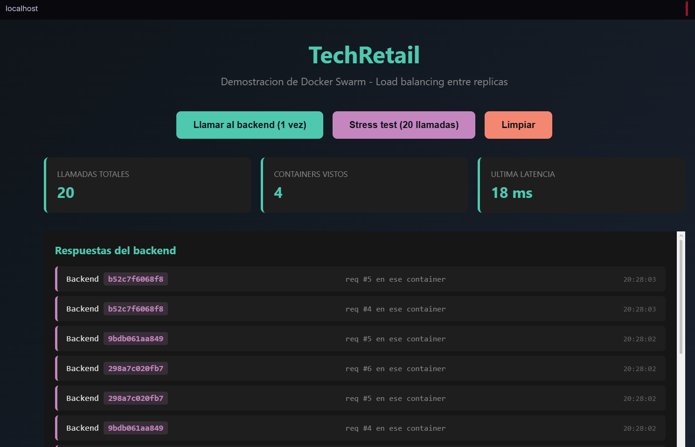
Resultado: las 20 llamadas se distribuyeron entre 4 contenedores backend distintos (b52c7f6068f8, 9bdb061aa849, 298a7c020fb7 y un cuarto). Esto demuestra el balanceo automatico de Swarm a nivel de aplicacion.
| # | Requerimiento | Estado | Evidencia |
|---|---|---|---|
| 3.1 | Cluster con 1 manager + 2 workers | OK | docker node ls (sec. 4.2) |
| 3.2 | docker-compose con >=4 servicios | OK | 5 servicios definidos (sec. 3.3) |
| 3.2 | Red overlay para comunicacion interna | OK | techretail_net (driver overlay) |
| 3.2 | Volumen para persistencia de la BD | OK | db_data:/var/lib/mysql |
| 3.3 | Frontend con >=3 replicas | OK | 3 inicial, escalado a 5 |
| 3.3 | Backend con >=2 replicas | OK | 2 inicial, escalado a 4 |
| 3.3 | Restart policy automatico | OK | condition: on-failure |
| 3.3 | Demostracion de escalado dinamico | OK | docker service scale (sec. 4.8) |
| 3.4 | Docker Secrets para credenciales BD | OK | db_password (sec. 4.3) |
| 3.4 | Docker Configs para archivos no sensibles | OK | 3 Configs (sec. 4.4) |
Problema: El enunciado del docente sugeria usar Play with Docker. Al intentar acceder, la plataforma muestra un aviso de deprecacion efectivo desde el 1 de marzo de 2026 y redirige a la pagina de marketing.
Solucion: Se migro a Docker Desktop local simulando el cluster con 3 contenedores Docker-in-Docker (DinD) en una red bridge interna. Se automatizo el setup en scripts/local-setup.ps1 para que cualquier evaluador pueda reproducir el ejercicio.
Problema: Los contenedores docker:dind no exponen el daemon inmediatamente; el dockerd interno tarda entre 10 y 20 segundos en estar listo. La primera version del script usaba un Start-Sleep fijo de 12s, insuficiente para node1. Como consecuencia, docker swarm init fallaba silenciosamente, el join token quedaba vacio y los swarm join se ejecutaban sin token.
Solucion: Se reemplazo el sleep fijo por una funcion de polling activo (Wait-DockerDaemon) que reintenta hasta 90 segundos. Adicionalmente se agrego una funcion Assert-Success que verifica $LASTEXITCODE despues de cada paso critico.
bashProblema: Los scripts del proyecto fueron escritos con shebang #!/usr/bin/env bash. Al ejecutarlos dentro de un nodo DinD (basado en Alpine Linux), fallaban con:
env: can't execute 'bash': No such file or directorySolucion: Cambiar el shebang a #!/bin/sh en los 5 scripts (los comandos eran POSIX-compatibles, no se requirio otra modificacion).
Problema: Despues del escalado del backend a 4 replicas, el stress test desde la SPA mostraba que las 20 llamadas eran atendidas siempre por el mismo contenedor backend (CONTAINERS VISTOS = 1):
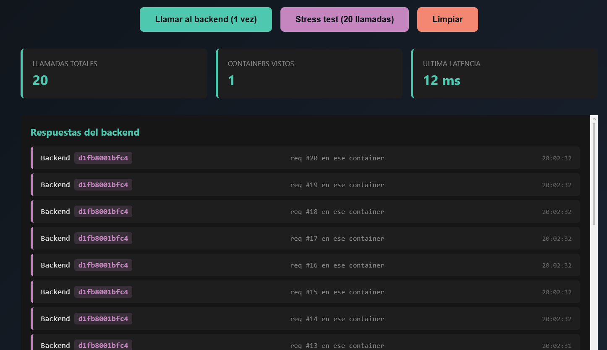
Analisis: La causa era doble:
endpoint_mode: vip (Virtual IP). El nombre backend en la red overlay resuelve a una unica IP virtual; el balanceo entre replicas lo hace IPVS a nivel kernel.proxy_http_version 1.1 mantenia una conexion TCP keep-alive con el VIP. Como IPVS toma decisiones por conexion TCP (no por request HTTP), todas las peticiones HTTP que viajaban por esa misma conexion TCP terminaban en la misma replica.Solucion: Combinacion de dos cambios:
1. En docker-compose.yml, cambiar el endpoint_mode del backend a dnsrr:
backend:
deploy:
endpoint_mode: dnsrr
replicas: 22. En frontend/nginx.conf, agregar el resolver DNS interno de Docker, usar variable en proxy_pass y deshabilitar keep-alive:
http {
resolver 127.0.0.11 valid=5s ipv6=off;
server {
location /api {
set $backend "backend";
proxy_pass http://$backend:3000;
proxy_set_header Connection close;
}
}
}Resultado tras el fix: las 20 llamadas se distribuyen entre las 4 replicas backend (CONTAINERS VISTOS = 4):
Este fue el problema tecnicamente mas interesante del proyecto: el balanceo "funcionaba" a nivel de Swarm desde el inicio, pero quedaba enmascarado por la combinacion de keep-alive HTTP + VIP. El cambio a DNSRR + resolver dinamico expuso el balanceo a nivel de cada peticion HTTP, ofreciendo una demostracion visual clara.
git pullProblema: Tras hacer chmod +x scripts/*.sh dentro de node1, git detectaba esos cambios de modo como "modificaciones locales" y bloqueaba un git pull posterior.
Solucion: Se descartaron los cambios locales con git checkout -- scripts/ y se procedio con el pull. En adelante se uso la forma sh ./script.sh (sin necesidad del bit ejecutable).
docker compose, lo que facilita la transicion desde despliegues mono-nodo.Docker Swarm es la opcion adecuada cuando:
Para escalas mayores o requisitos avanzados, Kubernetes sigue siendo la opcion estandar.
stack deploy basta para actualizar todas las replicas, sin construir ni publicar imagenes propias..env versionados, cumpliendo practicas basicas de seguridad.Codigo fuente: https://github.com/Danoviel/techretail-swarm
Reproducir el ejercicio en cualquier PC con Docker Desktop:
git clone https://github.com/Danoviel/techretail-swarm
cd techretail-swarm
.\scripts\local-setup.ps1 # levanta el cluster local
docker exec -it node1 sh # entra al manager
cd /techretail-swarm
sh ./scripts/02-create-secret.sh # crea el secret
sh ./scripts/03-deploy.sh # despliega el stack
sh ./scripts/04-scale-demo.sh # demuestra el escaladoAcceso desde el navegador del host:
http://localhosthttp://localhost:8080Limpieza completa: .\scripts\local-cleanup.ps1
# Inicializacion del cluster
docker swarm init --advertise-addr <IP>
docker swarm join-token worker
# Gestion de Secrets
echo "MiPasswordSegura123" | docker secret create db_password -
docker secret ls
# Despliegue del stack
docker stack deploy -c docker-compose.yml techretail
# Inspeccion del cluster
docker node ls
docker stack services techretail
docker stack ps techretail
docker service logs techretail_backend
docker config ls
docker secret ls
# Escalado dinamico
docker service scale techretail_frontend=5
docker service scale techretail_backend=4
# Limpieza
docker stack rm techretail
docker secret rm db_password
docker swarm leave --force